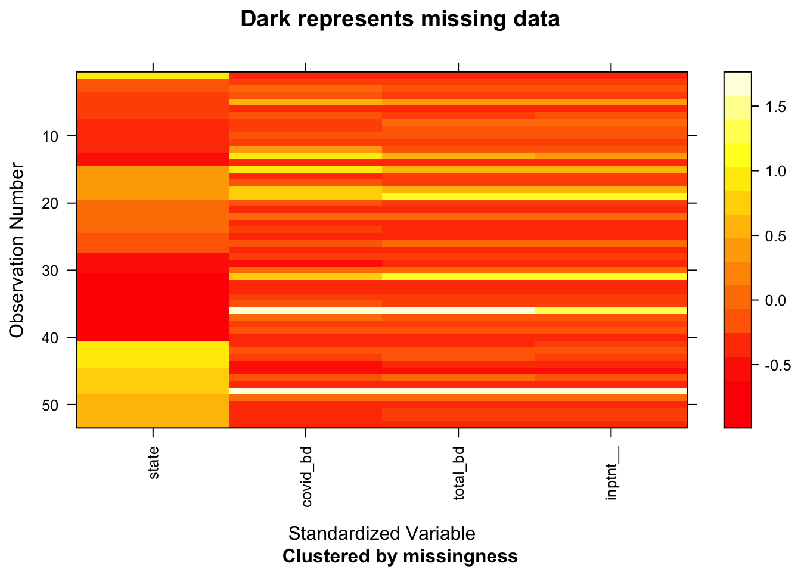
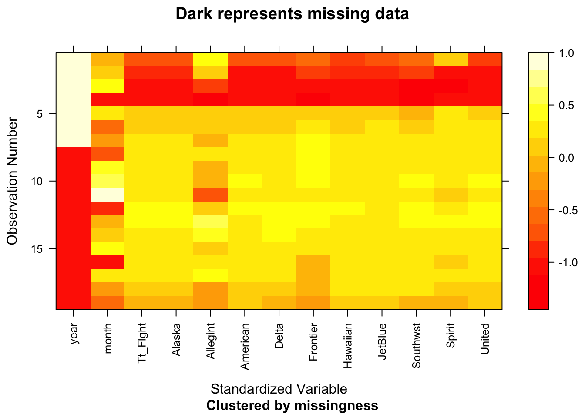
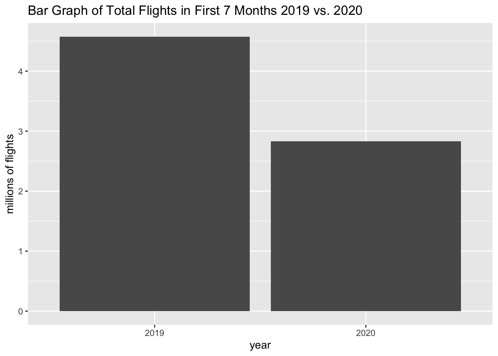
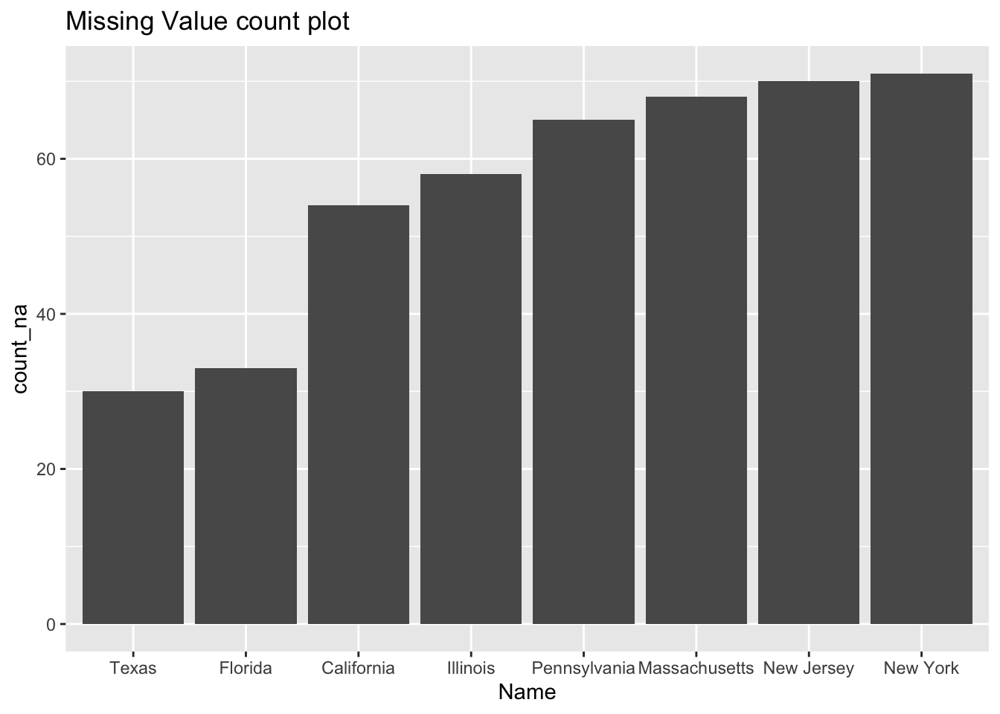
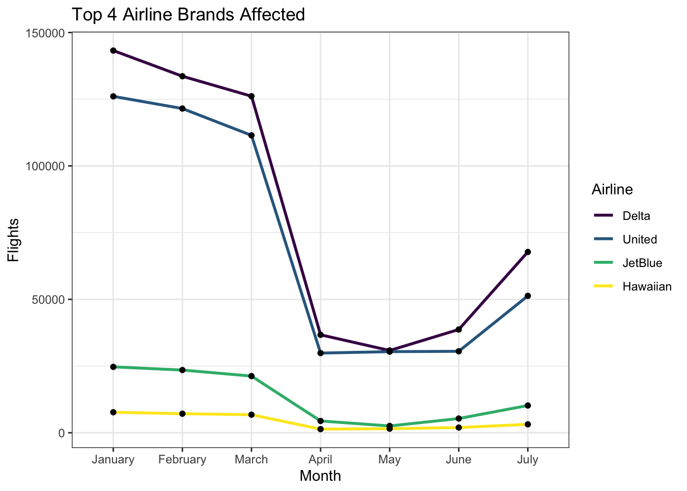

Chapter 4 Missing values
Describe any patterns you discover in missing values.
4.1 Covid Cases
There are no missing values in this dataset.
4.2 Country Policy Orders
## total_phases fips_code state_id county policy_level date policy_type start_stop comments source
## 2858 1659 0 0 0 0 0 0 0 0
There are a few missing values county, zip_code (fips_cod), and total phases. The missing county and zip code values are because if the policy is state wide, there is no entry in zip code or county. Hence there is no zip code and country details. In addition, most instances do not have total phases so there are many missing values there. Based on these observations, we will look at policy order dataset in both the county and state point of view.
4.3 Hospitalization
There is no missing data from the data we are working with. 
4.4 Airlines Covid Data
There are no values missing in our dataset. The only “missing values” we had were those in the year column. The way the data was initially presented in the table, one year was written in the year column on the first row for the whole year, meaning for the next 12 rows, representing a month per row. In order to make our data more understandable and usable, such that we would not have to hard code any data, we added values to the year column, instead of leaving it blank, such that we would have a full dataset to work with. For example, instead of having only 2019 in the first row under the year column, we added 2019 to the rest of the rows until December in the year column, such that we would have a full dataset, making it easier to classify and facet data if necessary.

As seen from this missing data dataframe, there is no dark squares representing no missing data for this dataset.
4.5 Restaurant data
Observing reopen dataset, we notice that each state contain consecutive missing values in the started from the beginning of April. And the first non-NA value started when this stated reopen for in-door dinning. Hence, states have more NA’s reopen later, and may be more conservative for allowing reopenning. From the number of NA, we can already know Texas, Florida reopen early for in-door dinning, New Jersey and New York reopen later for in-door dining
## NOTE: In the following pairs of variables, the missingness pattern of the second is a subset of the first.
## Please verify whether they are in fact logically distinct variables.
## [,1] [,2]
## [1,] "California" "Florida"
## [2,] "California" "Texas"
## [3,] "Florida" "Texas"
## [4,] "Illinois" "Texas"
## [5,] "Massachusetts" "Pennsylvania"
## [6,] "Massachusetts" "Texas"
## [7,] "New Jersey" "Texas"
## [8,] "New York" "Pennsylvania"
## [9,] "New York" "Texas"
## [10,] "Pennsylvania" "Texas" 